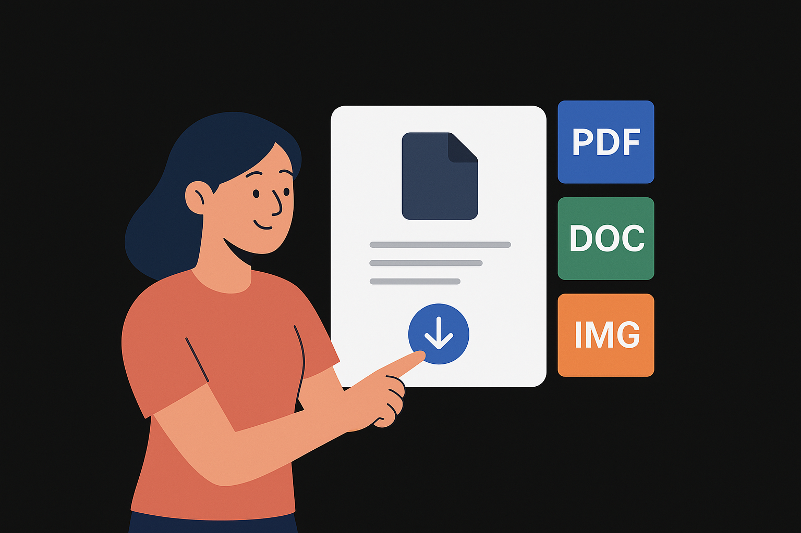

Welcome to Resume Craft
Your one-stop solution for creating professional resumes with ease.
Whether you're a fresh graduate or an experienced professional, ResumeCraft provides you with the tools you need to craft a resume that stands out.

Features
Easy-to-use resume builder
Customizable templates
Download in multiple formats (PDF, DOCX)
Tips and examples for each section
What Our Users Say
"ResumeCraft made creating my resume incredibly simple! The templates are professional and the interface is so intuitive. I landed my dream job within two weeks of using it!"
Sarah Johnson
Marketing Manager
"I was skeptical at first, but ResumeCraft exceeded all my expectations. The customization options are endless and the PDF export quality is perfect for sending to employers."
Michael Chen
Software Engineer
"Great tool for job seekers! The tips and examples helped me fill each section properly. Definitely worth the time investment. Highly recommend to anyone looking for a quick resume update."
Emily Rodriguez
Graphic Designer
"As someone switching careers, ResumeCraft helped me reframe my experience in a way that resonates with recruiters. The career transition template is a game-changer!"
David Patel
Career Switcher - Now Data Analyst
"I've used many resume builders, but ResumeCraft stands out for its simplicity and professional output. The customer support team is responsive and helpful too!"
Jessica Williams
HR Specialist
"Fantastic experience from start to finish. The multiple format downloads saved me time when applying to different companies with varying requirements. Absolutely love it!"
Robert Thompson
Project Manager
"ResumeCraft is perfect for fresh graduates like me. The examples and guided approach made it easy to create a professional resume without prior experience. Thank you!"
Alex Kumar
Fresh Graduate - Recent Hire
Get started today by signing up or logging in to your account!